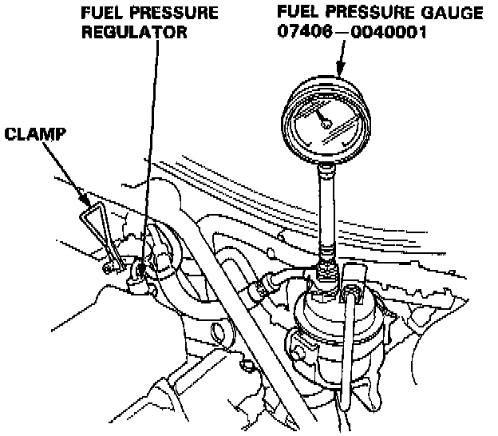

Fuel Pressure Regulator Test
WARNING: Do not smoke during the test. Keep open flames away from your work area.
1. Attach a fuel pressure gauge to the service port of the fuel filter.
Pressure should be:
310 - 360 kPa (3.1 - 3.6 kg/cm2, 44 - 51 psi)
(with the regulator vacuum hose disconnected and pinched)
2. Reconnect the vacuum hose to the fuel pressure regulator.
3. Check that the fuel pressure rises when the vacuum hose from the fuel regulator is disconnected again.
- If the fuel pressure did not rise, replace the fuel pressure regulator.